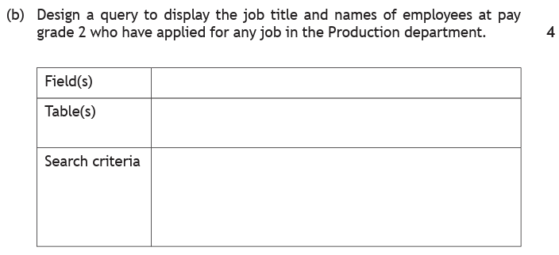
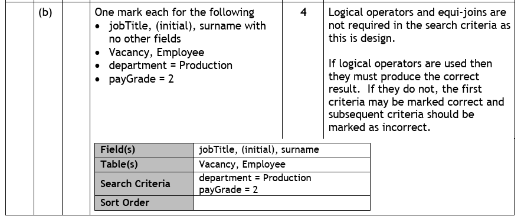
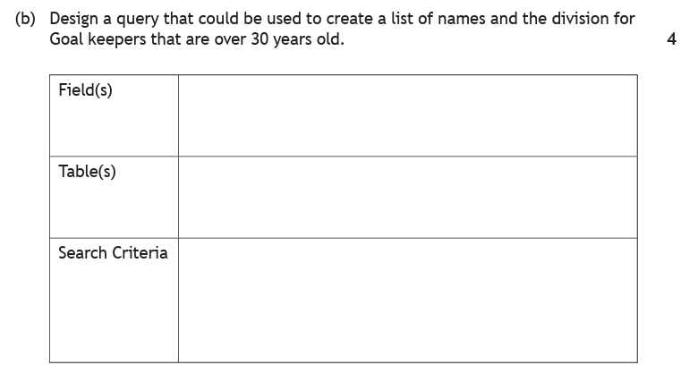
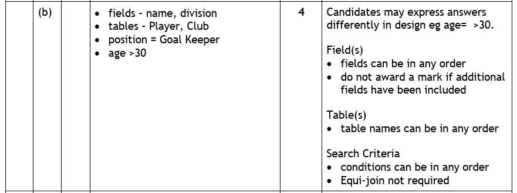
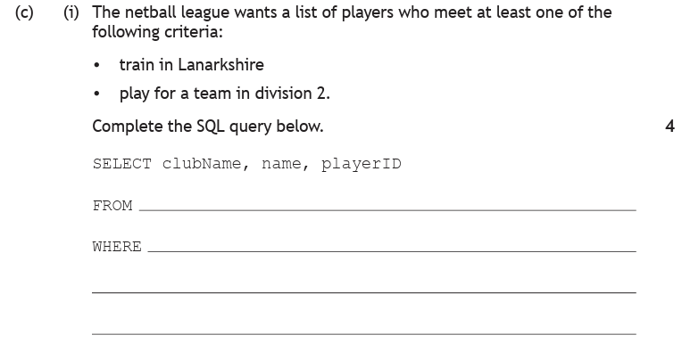
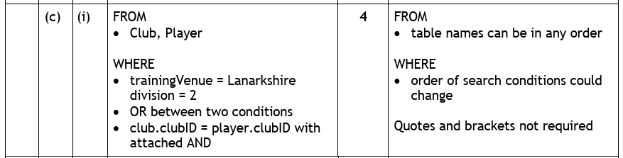

Introduction
On the SELECT page every query used one table. That works right up until the moment someone asks a question whose answer is split across two.
"Which pupils are in the Chess Club?" sounds like one question, but the data lives in two places. The pupils' names are in the Pupil table. The name of the club is in the Club table. Neither table can answer it alone.
An equi-join is what lets a single query reach across both. It works by matching the foreign key in one table to the primary key it points at in the other, so the database knows which record belongs with which. Once you can do that, a query can:
- Display fields from both tables at once — a pupil's name beside their club's meeting day.
- Search one table using a condition from the other — find pupils by the name of the club they attend, even though the Pupil table only stores a code.
- Keep the database properly split, without losing the ability to see the whole picture when you need it.
"Equi" simply means equal — the join is built on an equals sign, matching one key to the other.
Key Terms
=.Table1.key = Table2.key.Pupil.clubID — so there is no doubt which table it came from.Linked Tables — A Recap
Back on the design page you split a single overloaded table into two: Pupil and Club. Every example on this page uses that database.
| pupilID | pupilName | dateOfBirth | yearGroup | house | meritPoints | clubID |
|---|---|---|---|---|---|---|
| P101 | Archie | 14/03/2010 | 4 | Churchill | 42 | C01 |
| P102 | Noah | 02/11/2009 | 5 | Curie | 18 | C03 |
| P103 | Mason | 27/06/2010 | 4 | Montgomerie | 55 | C01 |
| P104 | Christian | 09/01/2008 | 6 | Nightingale | 31 | C02 |
| P105 | Leoni | 18/09/2010 | 4 | Curie | 67 | C04 |
| P106 | Lucienne | 30/04/2009 | 5 | Churchill | 24 | C03 |
| P107 | Erika | 12/12/2011 | 3 | Montgomerie | 49 | C04 |
| P108 | Louie | 05/07/2009 | 5 | Nightingale | 12 | C01 |
| P109 | Matthew | 21/02/2011 | 3 | Curie | 38 | C02 |
| P110 | Riley | 08/05/2010 | 4 | Churchill | 71 | C04 |
| P111 | Harveer | 16/10/2008 | 6 | Nightingale | 26 | C03 |
| clubID | clubName | meetingDay | meetingTime | staffLead | equipmentProvided |
|---|---|---|---|---|---|
| C01 | Chess Club | Monday | 15:30 | Mr Anderson | TRUE |
| C02 | Debating | Tuesday | 13:05 | Ms Hendry | FALSE |
| C03 | Film Making | Thursday | 15:30 | Mrs Kaur | TRUE |
| C04 | Athletics | Wednesday | 16:00 | Miss Lawson | FALSE |
clubID is the primary key of Club — it appears there once per club, and identifies it. The same field appears in Pupil as a foreign key, where it is not unique: three different pupils can all hold C01, because three pupils can all be in the Chess Club.
That repetition is the whole point. A foreign key is a pupil's way of pointing at a club without copying the club's details onto every pupil record. The diagram below shows the pointing actually happening:
Two things in that diagram are worth pausing on. Leoni and Riley both point at the same club — one club, many pupils, which is exactly what a one-to-many relationship looks like from the data's side. And C02 Debating has no arrow reaching it in this subset, which is fine: a club is allowed to exist whether or not anyone in these four rows attends it.
Pupil.clubID and Club.clubID hold the same value — and that equality is the whole of the equi-join.What the Join Actually Does
The clearest way to understand a join is to watch what happens when you forget it. Suppose we want each pupil's name next to the name of their club, and we write this:
SELECT pupilName, clubName FROM Pupil, Club;
Naming both tables in FROM tells the database to use them both, but it says nothing about how they relate. With no instruction to match anything up, the database does the only thing it can: it pairs every pupil with every club.
There are 11 pupils and 4 clubs, so the result is 11 × 4 = 44 rows. Here are the first three pupils' worth — 3 × 4 = 12 rows — which is enough to see the pattern:
| pupilName | clubName | Is this true? |
|---|---|---|
| Archie | Chess Club | ✅ correct — Archie is C01 |
| Archie | Debating | ❌ invented |
| Archie | Film Making | ❌ invented |
| Archie | Athletics | ❌ invented |
| Noah | Chess Club | ❌ invented |
| Noah | Debating | ❌ invented |
| Noah | Film Making | ✅ correct — Noah is C03 |
| Noah | Athletics | ❌ invented |
| Mason | Chess Club | ✅ correct — Mason is C01 |
| Mason | Debating | ❌ invented |
| Mason | Film Making | ❌ invented |
| Mason | Athletics | ❌ invented |
Every pupil appears four times, once against each club, and only one of those four is true. The other three are pairings the database has manufactured out of nothing. Across all 44 rows, exactly 11 are real and 33 are fiction.
Notice what the database has not done: it has not made a mistake, and it has not ignored your instructions. It has done precisely what you asked. You gave it two tables and no rule connecting them, so it produced every possible combination. The nonsense is in the question, not the answer.
Now add the join condition:
SELECT pupilName, clubName FROM Pupil, Club WHERE Pupil.clubID = Club.clubID;
That single line is a filter over the 44 pairings. It keeps a pairing only where the pupil's clubID matches the club's clubID — the 11 rows with a tick above — and throws away the other 33. What is left is one row per pupil, each beside their real club:
| pupilName | clubName |
|---|---|
| Archie | Chess Club |
| Noah | Film Making |
| Mason | Chess Club |
| Christian | Debating |
| Leoni | Athletics |
| Lucienne | Film Making |
| Erika | Athletics |
| Louie | Chess Club |
| Matthew | Debating |
| Riley | Athletics |
| Harveer | Film Making |
Writing an Equi-Join
Every equi-join follows the same shape, and it only differs from a single-table query in two places:
SELECT fields from either table FROM Table1, Table2 WHERE search criteria AND Table1.key = Table2.key;
- Both tables go in
FROM, separated by a comma. - The join condition goes in
WHERE, joined to any search criteria withAND.
The join condition is always written as table.field = table.field. Putting the table name in front is called qualifying the field, and here it is compulsory: both tables have a field called clubID, so clubID = clubID would be meaningless. Pupil.clubID = Club.clubID leaves no doubt.
Pupil.clubID = Club.clubID and Club.clubID = Pupil.clubID are the same condition and both earn the mark. The same goes for the order of the tables in FROM.Mr Anderson asks for a register: "Can I have the name of every pupil in the Chess Club, and remind me which day we meet?"
Design the query, then write the SQL.
How to tackle it: we work out the design first, and the moment the design names two tables we know a join is coming.
Field(s) — he wants "the name of every pupil", so pupilName, and "which day we meet", so meetingDay. Nothing else.
Table(s) — and here is the giveaway. pupilName is in Pupil; meetingDay is in Club. Two tables, so Pupil, Club.
Search criteria — "in the Chess Club". Look carefully at where that phrase can be tested. The Pupil table only stores C01; the words "Chess Club" appear in the Club table, so the condition is clubName = "Chess Club".
Sort order — he has not asked for one, so leave it empty. Never invent a sort.
So the design is:
| Field(s) | pupilName, meetingDay |
|---|---|
| Table(s) | Pupil, Club |
| Search criteria | clubName = "Chess Club" |
| Sort order | none |
Turning that into SQL, the two tables in the design become the two tables in FROM, and — because there are two of them — the join condition has to be added:
SELECT pupilName, meetingDay FROM Pupil, Club WHERE clubName = "Chess Club" AND Pupil.clubID = Club.clubID;
Which produces:
| pupilName | meetingDay |
|---|---|
| Archie | Monday |
| Mason | Monday |
| Louie | Monday |
Watch the trap: it is tempting to write WHERE clubID = "C01", because you can see from the Club table that Chess Club is C01. That does find the right pupils — but you have done the lookup in your head rather than letting the query do it, and it stops being an answer to the question that was asked. If the club were renumbered tomorrow, the query would quietly return the wrong pupils. Search on what the question actually named.
1 mark for SELECT pupilName, meetingDay · 1 mark for FROM Pupil, Club · 1 mark for clubName = "Chess Club" · 1 mark for the equi-join Pupil.clubID = Club.clubID attached with AND.
FROM, write the join condition before you write anything else.Design or SQL — Is the Join Needed?
This catches people out every year, so it is worth being exact about it.
A query design — the Field(s) / Table(s) / Search criteria / Sort order table — is a plan. It records what you want, not how the database will fetch it. Because the join is a mechanical detail of the fetching, SQA's marking instructions say plainly that the equi-join is not required in a design answer. Naming both tables in the Table(s) row is what earns that mark.
A SQL answer is the real thing, and there the join is compulsory. Without it the query returns nonsense, and the mark is gone.
The two past-paper questions below are both design questions, and their marking instructions say so explicitly. The third is the SQL version of the same idea, where the join carries a mark of its own.
This question uses the company database below. Each employee applies for one vacancy, and jobRef links the two tables.


How to tackle it: the wording "Design a query" tells us to fill in the design table, not to write SQL. We take the sentence apart one row at a time.
Field(s) — "display the job title and names of employees". That is jobTitle, plus the name, which in this database is split into initial and surname. So jobTitle, initial, surname. Nothing else — the marking instructions say "with no other fields", and adding department or payGrade because they are mentioned would cost the mark.
Table(s) — jobTitle and department are in Vacancy; initial, surname and payGrade are in Employee. Both are needed, so Vacancy, Employee.
Search criteria — two conditions, one from each table: department = "Production" and payGrade = 2.
The point of this question: the answer is a two-table query, and yet the equi-join appears nowhere in the marking instructions. They state it directly — "Logical operators and equi-joins are not required in the search criteria as this is design." The Table(s) row naming both tables is what shows you understood the query spans two.

So the completed design is:
| Field(s) | jobTitle, initial, surname |
|---|---|
| Table(s) | Vacancy, Employee |
| Search criteria | department = "Production" payGrade = 2 |
| Sort order | none |
Watch the trap: the marking instructions add a warning about logical operators — if you do write AND or OR between your conditions, they have to give the correct result. Writing department = "Production" OR payGrade = 2 would return everyone in Production plus everyone on grade 2, which is not what was asked. Listing the conditions on separate lines, as the answer does, avoids the risk entirely.
1 mark: jobTitle, initial, surname and no other fields · 1 mark: Vacancy, Employee · 1 mark: department = Production · 1 mark: payGrade = 2.
This question and the next both use the netball league database. clubID is the primary key of Club and a foreign key in Player.
![Netball league database. Club table with fields clubID, clubName, trainingVenue, contactNo and division, containing A2706 Joint Forces Glasgow division 3; B1803 Shooting Stars Renfrewshire division 2; E0408 Team Titans Glasgow division 1; P2507 Hot Shots Lanarkshire division 1; H0311 Throwing Tigers Glasgow division 2. Player table with fields playerID, name, email, age, position and clubID, containing nine players including Meenal age 21 Goal keeper E0408, Ibrahim age 36 Wing defence E0408 and Xander age 38 Goal defence E0408.](../resources/ddd/worked-examples/n5_netballDB_structure.png)

How to tackle it: same method, and again the phrase "Design a query" means the design table only.
Field(s) — "a list of names and the division". So name and division. Note how little is asked for: not the position, not the age, even though both are used to filter. A field you search on does not have to be a field you display.
Table(s) — name, position and age are in Player; division is in Club. So Player, Club.
Search criteria — "Goal keepers" gives position = "Goal keeper", and "over 30 years old" gives age > 30.

So the completed design is:
| Field(s) | name, division |
|---|---|
| Table(s) | Player, Club |
| Search criteria | position = "Goal keeper" age > 30 |
| Sort order | none |
Watch the trap: "over 30" is > 30, not >= 30. In the sample data Ibrahim is 36 and Xander is 38, but if a 30-year-old goal keeper existed the marker would be checking whether you had wrongly let them in.
The marking instructions are generous on presentation — fields in any order, tables in any order, conditions in any order — but strict on two things: no extra fields, and once again "Equi-join not required".
1 mark: name, division · 1 mark: Player, Club · 1 mark: position = Goal Keeper · 1 mark: age > 30.
Same database, next part of the same question — and this time the join is worth a mark.

How to tackle it: the SELECT line is already printed, so every mark is in FROM and WHERE. Three things have to appear: both tables, the two conditions correctly combined, and the join.
FROM — clubName is in Club, while name and playerID are in Player. The SELECT line alone tells us both tables are needed: FROM Club, Player.
The conditions — "train in Lanarkshire" is trainingVenue = "Lanarkshire", and "a team in division 2" is division = 2. Both fields live in Club.
How to combine them — this is where the marks are won or lost. The question says "at least one of the following criteria". At least one means OR, not AND. If you read too quickly and write AND, you are asking for clubs that are in Lanarkshire and in division 2 — a far smaller list, and the wrong one.
The join — two tables are in play, so Club.clubID = Player.clubID must be there, attached with AND.

So the completed query is:
SELECT clubName, name, playerID FROM Club, Player WHERE (trainingVenue = "Lanarkshire" OR division = 2) AND Club.clubID = Player.clubID;
A note on the brackets: the marking instructions say quotes and brackets are not required, so you will not lose a mark without them. They are still worth writing. The condition mixes OR and AND, and the brackets make it unmistakable that the OR is the pair of search conditions and the AND attaches the join to both of them. It costs two characters and removes all doubt — for you as much as for the marker.
Watch the trap: compare this with the two design questions above. Identical database, almost identical thinking — but the moment the question says "Complete the SQL query", the equi-join stops being optional and becomes a mark in its own right.
1 mark: FROM Club, Player · 1 mark: trainingVenue = "Lanarkshire" and division = 2 · 1 mark: the two conditions joined by OR · 1 mark: the equi-join Club.clubID = Player.clubID attached with AND.
Try It
Join Switch
One switch, one query, two very different answers. With the join off the result fills with all 44 pairings and every false one is named as invented. Switch it on and watch the 33 nonsense rows strike through and fall away, leaving the 11 that are true. Flip it back and forth until the difference feels obvious.
Which Table Is It In?
Before you can write a join you have to notice you need one. Work through five queries, placing each field in the table it lives in — click a field, then click a table. When everything is placed, the interactive tells you how many tables the query really needed and builds the FROM line. Three of the five need a join; two do not, and the last one is a trap.
The Joined Row, Assembled
What is a joined record, exactly? One Pupil record and one Club record line up on their matching clubID and slide together into a single row containing every field from both — which is why a query can then select from either side without caring where anything started.
Practice Questions
These use a garden centre database. Supplier holds the growers, Plant holds the stock, and supplierID is the primary key of Supplier and a foreign key in Plant.
| supplierID | supplierName | town | phone |
|---|---|---|---|
| S01 | Highland Growers | Perth | 01738 900112 |
| S02 | Border Blooms | Kelso | 01573 900487 |
| S03 | Clyde Nurseries | Lanark | 01555 900263 |
| S04 | Tay Valley Plants | Perth | 01382 900745 |
| plantID | plantName | category | priceGBP | inStock | supplierID |
|---|---|---|---|---|---|
| P201 | Lavender | Shrub | 6.50 | TRUE | S02 |
| P202 | Japanese Maple | Tree | 34.00 | TRUE | S01 |
| P203 | Hosta | Perennial | 8.25 | FALSE | S03 |
| P204 | Rosemary | Herb | 4.99 | TRUE | S02 |
| P205 | Silver Birch | Tree | 27.50 | TRUE | S01 |
| P206 | Foxglove | Perennial | 5.75 | TRUE | S04 |
| P207 | Bay Tree | Shrub | 18.00 | FALSE | S03 |
| P208 | Thyme | Herb | 3.99 | TRUE | S04 |
| P209 | Rowan | Tree | 31.00 | TRUE | S01 |
| P210 | Astilbe | Perennial | 7.40 | FALSE | S02 |
Design a query to display the name and price of every tree costing more than £30, together with the name of the supplier who provides it.
Marking Instructions
| Field(s) | plantName, priceGBP, supplierName |
|---|---|
| Table(s) | Plant, Supplier |
| Search criteria | category = "Tree" priceGBP > 30 |
| Sort order | none |
1 mark: plantName, priceGBP, supplierName and no other fields · 1 mark: Plant, Supplier · 1 mark: category = "Tree" · 1 mark: priceGBP > 30.
This is a design question, so the equi-join is not required — naming both tables is what shows you knew the query spans two. Writing the join as well would not be penalised.
Do not add category to the fields. It is what you search on, not what you were asked to display.
The design would return Japanese Maple at £34.00 and Rowan at £31.00, both from Highland Growers. Silver Birch is a tree but costs £27.50, so > 30 correctly leaves it out — >= 30 would not have changed the answer here, but "more than" is still >.
Write the SQL to display the plant name and the supplier's name for every plant costing more than £20.
Marking Instructions
SELECT plantName, supplierName FROM Plant, Supplier WHERE priceGBP > 20 AND Plant.supplierID = Supplier.supplierID;
1 mark: SELECT plantName, supplierName · 1 mark: FROM Plant, Supplier · 1 mark: priceGBP > 20 · 1 mark: the equi-join Plant.supplierID = Supplier.supplierID attached with AND.
Output: Japanese Maple (Highland Growers), Silver Birch (Highland Growers), Rowan (Highland Growers). All three of the plants over £20 happen to come from the same supplier, which is exactly why the join is needed — without it the query would pair each of them with all four suppliers.
20 takes no quotes because priceGBP is a number. The table names in FROM and the two sides of the join may be written in either order.
A pupil writes the following query to list the name of every plant that is out of stock, along with the phone number to reorder it.
SELECT plantName, phone FROM Plant, Supplier WHERE inStock = FALSE;
(a) Explain what is wrong with this query. (b) State how many rows it would return. (c) Rewrite the WHERE clause correctly.
Marking Instructions
(a) 1 mark: there is no join condition, so every out-of-stock plant is paired with every supplier, producing rows that state a phone number belonging to a supplier who does not provide that plant.
(b) 1 mark: 12 rows. Three plants are out of stock — Hosta, Bay Tree and Astilbe — and there are 4 suppliers, so 3 × 4 = 12. Only 3 of those rows would be true.
(c) 1 mark:
WHERE inStock = FALSE AND Plant.supplierID = Supplier.supplierID;
Corrected output: Hosta with Clyde Nurseries' number, Bay Tree with Clyde Nurseries' number, and Astilbe with Border Blooms' number.
Note that the query as written produces no error message — it runs and returns 12 confident-looking rows. That is what makes a missing join so easy to hand in.
The garden centre wants a list of plants that meet at least one of the following:
- they are supplied from Perth
- they cost less than £5.00
Write the SQL to display the plant name, the price and the supplier's town.
Marking Instructions
SELECT plantName, priceGBP, town FROM Plant, Supplier WHERE (town = "Perth" OR priceGBP < 5) AND Plant.supplierID = Supplier.supplierID;
1 mark: SELECT plantName, priceGBP, town with FROM Plant, Supplier · 1 mark: town = "Perth" and priceGBP < 5 · 1 mark: the two conditions joined by OR · 1 mark: the equi-join attached with AND.
Output: Japanese Maple, Silver Birch and Rowan (Perth, via Highland Growers); Foxglove and Thyme (Perth, via Tay Valley Plants); and Rosemary at £4.99 from Border Blooms in Kelso, which qualifies on price alone. Thyme meets both conditions but still appears only once.
"At least one" means OR. Using AND would ask for plants that are both from Perth and under £5, which returns Thyme only.
Brackets round the OR are not required for the mark, but they make it clear that the join applies to both alternatives.
(a) Design a query to display the name of every herb and the town it is supplied from. (b) Write the SQL for your design.
Marking Instructions
(a) 2 marks:
| Field(s) | plantName, town |
|---|---|
| Table(s) | Plant, Supplier |
| Search criteria | category = "Herb" |
| Sort order | none |
1 mark for the fields and tables, 1 mark for the search criteria. No equi-join needed here.
(b) 3 marks:
SELECT plantName, town FROM Plant, Supplier WHERE category = "Herb" AND Plant.supplierID = Supplier.supplierID;
1 mark: correct fields and both tables · 1 mark: category = "Herb" · 1 mark: the equi-join.
Output: Rosemary from Kelso, Thyme from Perth.
The whole point of this question is the difference between the two parts. The design and the SQL contain the same thinking, but only part (b) awards a mark for the join — and only part (b) would return nonsense without it.
Next — Changing the Data
Everything on this page and the SELECT page only reads the database. Nothing you have written so far changes a single stored value.
The next page covers the queries that do: INSERT, UPDATE and DELETE — adding a record, changing one, and removing one — along with what referential integrity does when you try to delete something another table still points at.